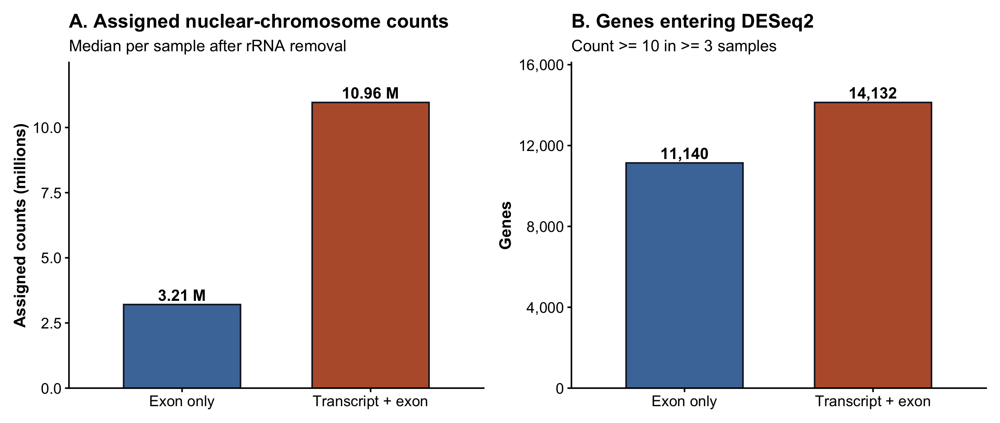
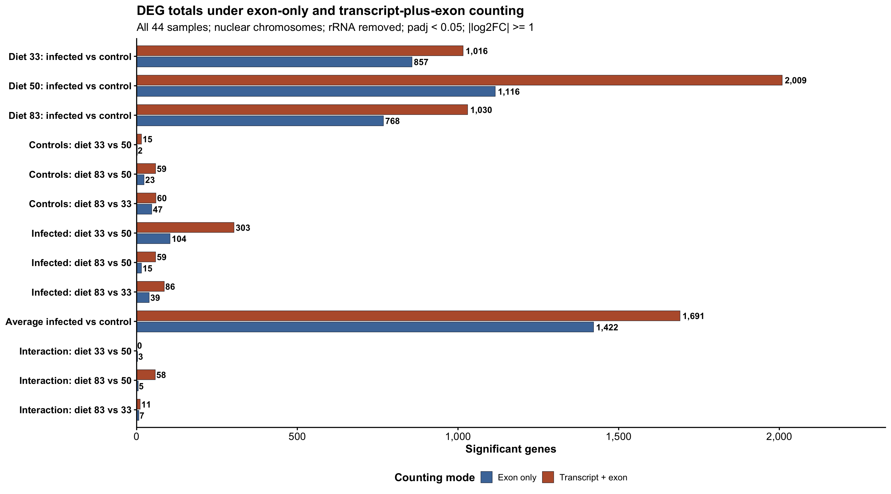
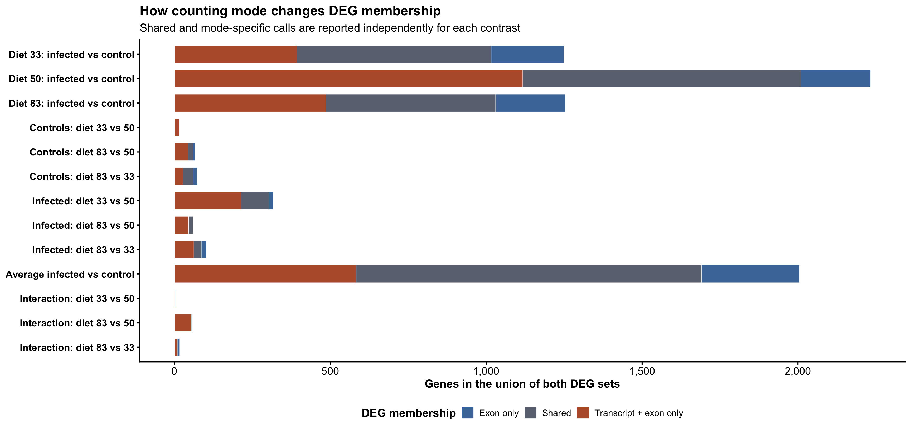

Last updated: 2026-08-07
Checks: 6 1
Knit directory:
gregaria-diet-infection-interaction/
This reproducible R Markdown analysis was created with workflowr (version 1.7.2). The Checks tab describes the reproducibility checks that were applied when the results were created. The Past versions tab lists the development history.
The R Markdown is untracked by Git. To know which version of the R
Markdown file created these results, you’ll want to first commit it to
the Git repo. If you’re still working on the analysis, you can ignore
this warning. When you’re finished, you can run
wflow_publish to commit the R Markdown file and build the
HTML.
Great job! The global environment was empty. Objects defined in the global environment can affect the analysis in your R Markdown file in unknown ways. For reproduciblity it’s best to always run the code in an empty environment.
The command set.seed(20260427) was run prior to running
the code in the R Markdown file. Setting a seed ensures that any results
that rely on randomness, e.g. subsampling or permutations, are
reproducible.
Great job! Recording the operating system, R version, and package versions is critical for reproducibility.
Nice! There were no cached chunks for this analysis, so you can be confident that you successfully produced the results during this run.
Great job! Using relative paths to the files within your workflowr project makes it easier to run your code on other machines.
Great! You are using Git for version control. Tracking code development and connecting the code version to the results is critical for reproducibility.
The results in this page were generated with repository version 0942a37. See the Past versions tab to see a history of the changes made to the R Markdown and HTML files.
Note that you need to be careful to ensure that all relevant files for
the analysis have been committed to Git prior to generating the results
(you can use wflow_publish or
wflow_git_commit). workflowr only checks the R Markdown
file, but you know if there are other scripts or data files that it
depends on. Below is the status of the Git repository when the results
were generated:
Ignored files:
Ignored: .DS_Store
Ignored: analysis/output/
Ignored: code/R_timecourse_reference/
Ignored: code/scripts/__pycache__/
Ignored: data/raw_read_counts/DESeq2_output/overlap_DEGs/
Ignored: data/reference/
Ignored: output/.DS_Store
Ignored: output/rmd_runs/
Ignored: output/runs/
Ignored: outputs/.DS_Store
Ignored: scripts/.RData
Ignored: scripts/.Rhistory
Untracked files:
Untracked: analysis/35-count-definition-sensitivity.Rmd
Unstaged changes:
Modified: analysis/08-publication-figures.Rmd
Modified: analysis/_site.yml
Note that any generated files, e.g. HTML, png, CSS, etc., are not included in this status report because it is ok for generated content to have uncommitted changes.
There are no past versions. Publish this analysis with
wflow_publish() to start tracking its development.
Step 1 - Hold the experiment constant
Retain all 44 samples, the competitive host alignment, the same chromosome scope, and the same rRNA exclusion list.
Step 2 - Change only counting mode
Compare featureCounts using -t exon -g gene_id with
-t transcript,exon -g gene_id.
Step 3 - Compare DEG calls
Run identical DESeq2 models and report shared and counting-mode-specific DEGs.
The transcript-plus-exon definition can assign reads that overlap the span of annotated transcript features, including intronic sequence. This makes the additional signal consistent with unspliced or nascent pre-mRNA, but it does not prove that every added read is pre-mRNA. Annotation structure, overlapping features, and retained introns can also contribute.
This page is a sensitivity analysis. The manuscript analysis continues to use transcript-plus-exon counts, while this comparison shows how strongly that choice changes the tested genes and DEG calls.
knitr::opts_chunk$set(message = FALSE, warning = FALSE)
required <- c("DESeq2", "dplyr", "tidyr", "tibble", "ggplot2", "scales",
"patchwork", "DT")
missing <- required[!vapply(required, requireNamespace, logical(1), quietly = TRUE)]
if (length(missing) > 0) {
stop("Install required packages before knitting: ", paste(missing, collapse = ", "))
}
project_dir <- normalizePath(".", mustWork = TRUE)
run_stamp <- format(Sys.time(), "%Y%m%d-%H%M%S")
out_dir <- file.path(
project_dir, "output", "rmd_runs",
paste(params$output_tag, run_stamp, sep = "_")
)
dir.create(out_dir, recursive = TRUE, showWarnings = FALSE)
input_paths <- c(
exon_counts = file.path(project_dir, params$exon_counts_file),
transcript_exon_counts = file.path(project_dir, params$transcript_exon_counts_file),
metadata = file.path(project_dir, params$metadata_file),
placement = file.path(project_dir, params$placement_file),
rrna = file.path(project_dir, params$rrna_file)
)
if (!all(file.exists(input_paths))) {
stop("Missing input(s): ", paste(input_paths[!file.exists(input_paths)], collapse = ", "))
}
mode_colors <- c(
"Exon only" = "#4C78A8",
"Transcript + exon" = "#B85C38"
)
membership_colors <- c(
"Exon only" = "#4C78A8",
"Shared" = "#6B7280",
"Transcript + exon only" = "#B85C38"
)
theme_report <- function(base_size = 15) {
ggplot2::theme_classic(base_size = base_size) +
ggplot2::theme(
plot.title = ggplot2::element_text(face = "bold", size = base_size + 3),
plot.subtitle = ggplot2::element_text(size = base_size),
strip.text = ggplot2::element_text(face = "bold", size = base_size),
axis.text = ggplot2::element_text(size = base_size - 1),
axis.title = ggplot2::element_text(face = "bold", size = base_size),
legend.position = "bottom",
legend.title = ggplot2::element_text(face = "bold")
)
}
save_png_svg <- function(plot, stem, width, height) {
ggplot2::ggsave(
file.path(out_dir, paste0(stem, ".png")), plot,
width = width, height = height, dpi = 300, limitsize = FALSE
)
if (requireNamespace("svglite", quietly = TRUE)) {
ggplot2::ggsave(
file.path(out_dir, paste0(stem, ".svg")), plot,
width = width, height = height, limitsize = FALSE
)
}
}read_count_matrix <- function(path) {
tab <- read.delim(path, check.names = FALSE)
if (!"gene_id" %in% names(tab)) stop("Count matrix lacks gene_id: ", path)
if (anyDuplicated(tab$gene_id)) stop("Duplicated gene IDs in: ", path)
mat <- as.matrix(tab[, setdiff(names(tab), "gene_id"), drop = FALSE])
storage.mode(mat) <- "integer"
rownames(mat) <- as.character(tab$gene_id)
mat
}
raw_counts <- list(
"Exon only" = read_count_matrix(input_paths[["exon_counts"]]),
"Transcript + exon" = read_count_matrix(input_paths[["transcript_exon_counts"]])
)
metadata <- read.delim(input_paths[["metadata"]], check.names = FALSE)
metadata <- metadata[, !is.na(names(metadata)) & nzchar(names(metadata)), drop = FALSE]
metadata$label <- as.character(metadata$label)
metadata$Diet <- factor(metadata$Diet, levels = c("33", "50", "83"))
metadata$Treatment <- factor(metadata$Treatment, levels = c("Control", "Infected"))
metadata$group <- factor(
paste0("diet", metadata$Diet, "_", tolower(as.character(metadata$Treatment))),
levels = c(
"diet33_control", "diet50_control", "diet83_control",
"diet33_infected", "diet50_infected", "diet83_infected"
)
)
sample_ids <- metadata$label
if (!all(vapply(raw_counts, function(x) setequal(colnames(x), sample_ids), logical(1)))) {
stop("Count matrices and metadata do not contain the same sample IDs.")
}
raw_counts <- lapply(raw_counts, function(x) x[, sample_ids, drop = FALSE])
rownames(metadata) <- metadata$label
rrna_ids <- trimws(readLines(input_paths[["rrna"]], warn = FALSE))
rrna_ids <- rrna_ids[nzchar(rrna_ids) & !startsWith(rrna_ids, "#")]
placement <- read.delim(input_paths[["placement"]], check.names = FALSE) |>
dplyr::distinct(.data$gene_id, .keep_all = TRUE)
nuclear_ids <- unique(placement$gene_id[placement$sequence_class == "Nuclear chromosome"])
rrna_filtered_counts <- lapply(raw_counts, function(x) {
x[!rownames(x) %in% rrna_ids, , drop = FALSE]
})
nuclear_counts <- lapply(rrna_filtered_counts, function(x) {
x[rownames(x) %in% nuclear_ids, , drop = FALSE]
})
input_audit <- dplyr::bind_rows(lapply(names(raw_counts), function(mode) {
raw <- raw_counts[[mode]]
no_rrna <- rrna_filtered_counts[[mode]]
nuclear <- nuclear_counts[[mode]]
keep <- rowSums(nuclear >= params$min_count) >= params$min_samples
tibble::tibble(
counting_mode = mode,
samples = ncol(raw),
input_gene_rows = nrow(raw),
listed_rRNA_rows_removed = sum(rownames(raw) %in% rrna_ids),
genes_after_rRNA_removal = nrow(no_rrna),
nuclear_chromosome_genes = nrow(nuclear),
rRNA_rows_remaining = sum(rownames(nuclear) %in% rrna_ids),
median_assigned_counts_per_sample = median(colSums(nuclear)),
genes_entering_DESeq2 = sum(keep)
)
}))
write.csv(input_audit, file.path(out_dir, "count_definition_input_audit.csv"),
row.names = FALSE)
DT::datatable(
input_audit,
rownames = FALSE,
options = list(pageLength = 5, scrollX = TRUE),
caption = "Matched count-definition and rRNA audit"
)Both matrices must report zero in rRNA_rows_remaining.
This is a direct check against gregaria_rrna_list, rather
than an inference from the featureCounts labels.
p_reads <- input_audit |>
dplyr::mutate(
counting_mode = factor(.data$counting_mode, levels = names(mode_colors)),
median_millions = .data$median_assigned_counts_per_sample / 1e6
) |>
ggplot2::ggplot(ggplot2::aes(
x = .data$counting_mode, y = .data$median_millions,
fill = .data$counting_mode
)) +
ggplot2::geom_col(width = 0.62, color = "#111827") +
ggplot2::geom_text(
ggplot2::aes(label = sprintf("%.2f M", .data$median_millions)),
vjust = -0.35, size = 5.2, fontface = "bold"
) +
ggplot2::scale_fill_manual(values = mode_colors, guide = "none") +
ggplot2::scale_y_continuous(
expand = ggplot2::expansion(mult = c(0, 0.14))
) +
ggplot2::labs(
title = "A. Assigned nuclear-chromosome counts",
subtitle = "Median per sample after rRNA removal",
x = NULL, y = "Assigned counts (millions)"
) +
theme_report()
p_tested <- input_audit |>
dplyr::mutate(counting_mode = factor(.data$counting_mode,
levels = names(mode_colors))) |>
ggplot2::ggplot(ggplot2::aes(
x = .data$counting_mode, y = .data$genes_entering_DESeq2,
fill = .data$counting_mode
)) +
ggplot2::geom_col(width = 0.62, color = "#111827") +
ggplot2::geom_text(
ggplot2::aes(label = scales::comma(.data$genes_entering_DESeq2)),
vjust = -0.35, size = 5.2, fontface = "bold"
) +
ggplot2::scale_fill_manual(values = mode_colors, guide = "none") +
ggplot2::scale_y_continuous(
labels = scales::label_comma(),
expand = ggplot2::expansion(mult = c(0, 0.14))
) +
ggplot2::labs(
title = "B. Genes entering DESeq2",
subtitle = paste0("Count >= ", params$min_count, " in >= ",
params$min_samples, " samples"),
x = NULL, y = "Genes"
) +
theme_report()
p_input_summary <- p_reads | p_tested
save_png_svg(p_input_summary, "count_definition_input_summary", 13, 5.5)
p_input_summary
pair_contrast <- function(id, family, numerator, denominator,
numerator_label, denominator_label) {
list(
id = id,
family = family,
numerator = numerator_label,
denominator = denominator_label,
weights = stats::setNames(c(1, -1), c(numerator, denominator))
)
}
contrast_definitions <- list(
pair_contrast("infection_diet33", "Infection within diet", "diet33_infected", "diet33_control", "Infected diet 33", "Control diet 33"),
pair_contrast("infection_diet50", "Infection within diet", "diet50_infected", "diet50_control", "Infected diet 50", "Control diet 50"),
pair_contrast("infection_diet83", "Infection within diet", "diet83_infected", "diet83_control", "Infected diet 83", "Control diet 83"),
pair_contrast("control_diet33_vs50", "Diet among controls", "diet33_control", "diet50_control", "Control diet 33", "Control diet 50"),
pair_contrast("control_diet83_vs50", "Diet among controls", "diet83_control", "diet50_control", "Control diet 83", "Control diet 50"),
pair_contrast("control_diet83_vs33", "Diet among controls", "diet83_control", "diet33_control", "Control diet 83", "Control diet 33"),
pair_contrast("infected_diet33_vs50", "Diet among infected", "diet33_infected", "diet50_infected", "Infected diet 33", "Infected diet 50"),
pair_contrast("infected_diet83_vs50", "Diet among infected", "diet83_infected", "diet50_infected", "Infected diet 83", "Infected diet 50"),
pair_contrast("infected_diet83_vs33", "Diet among infected", "diet83_infected", "diet33_infected", "Infected diet 83", "Infected diet 33"),
list(
id = "infection_average_all_diets",
family = "Average infection response",
numerator = "Average infected",
denominator = "Average control",
weights = c(
diet33_infected = 1 / 3, diet50_infected = 1 / 3,
diet83_infected = 1 / 3, diet33_control = -1 / 3,
diet50_control = -1 / 3, diet83_control = -1 / 3
)
),
list(
id = "interaction_diet33_vs50",
family = "Diet by infection interaction",
numerator = "Infection response diet 33",
denominator = "Infection response diet 50",
weights = c(
diet33_infected = 1, diet33_control = -1,
diet50_infected = -1, diet50_control = 1
)
),
list(
id = "interaction_diet83_vs50",
family = "Diet by infection interaction",
numerator = "Infection response diet 83",
denominator = "Infection response diet 50",
weights = c(
diet83_infected = 1, diet83_control = -1,
diet50_infected = -1, diet50_control = 1
)
),
list(
id = "interaction_diet83_vs33",
family = "Diet by infection interaction",
numerator = "Infection response diet 83",
denominator = "Infection response diet 33",
weights = c(
diet83_infected = 1, diet83_control = -1,
diet33_infected = -1, diet33_control = 1
)
)
)
fit_count_mode <- function(counts, counting_mode) {
keep <- rowSums(counts >= params$min_count) >= params$min_samples
analysis_counts <- counts[keep, , drop = FALSE]
dds <- DESeq2::DESeqDataSetFromMatrix(
countData = analysis_counts,
colData = as.data.frame(metadata[sample_ids, , drop = FALSE]),
design = ~ 0 + group
)
dds <- DESeq2::DESeq(
dds, minReplicatesForReplace = Inf, quiet = TRUE
)
coefficient_names <- DESeq2::resultsNames(dds)
results <- dplyr::bind_rows(lapply(contrast_definitions, function(definition) {
contrast_vector <- stats::setNames(
rep(0, length(coefficient_names)), coefficient_names
)
requested <- paste0("group", names(definition$weights))
if (!all(requested %in% coefficient_names)) {
stop("Missing coefficient(s) for ", definition$id)
}
contrast_vector[requested] <- unname(definition$weights)
as.data.frame(DESeq2::results(
dds,
contrast = contrast_vector,
alpha = params$alpha,
cooksCutoff = FALSE
)) |>
tibble::rownames_to_column("gene_id") |>
tibble::as_tibble() |>
dplyr::mutate(
counting_mode = counting_mode,
contrast_id = definition$id,
contrast_family = definition$family,
numerator = definition$numerator,
denominator = definition$denominator,
significant = !is.na(.data$padj) &
.data$padj < params$alpha &
abs(.data$log2FoldChange) >= params$lfc_threshold,
direction = dplyr::case_when(
!.data$significant ~ "Not significant",
.data$log2FoldChange > 0 ~ "Higher in numerator",
TRUE ~ "Higher in denominator"
)
)
}))
list(dds = dds, results = results)
}
mode_fits <- lapply(names(nuclear_counts), function(mode) {
fit_count_mode(nuclear_counts[[mode]], mode)
})
names(mode_fits) <- names(nuclear_counts)
all_results <- dplyr::bind_rows(lapply(mode_fits, `[[`, "results"))
deg_counts <- all_results |>
dplyr::filter(.data$significant) |>
dplyr::count(
.data$counting_mode, .data$contrast_family, .data$contrast_id,
.data$direction, name = "n_DEGs"
) |>
tidyr::complete(
counting_mode = names(mode_colors),
tidyr::nesting(contrast_family, contrast_id),
direction = c("Higher in numerator", "Higher in denominator"),
fill = list(n_DEGs = 0)
) |>
dplyr::group_by(.data$counting_mode, .data$contrast_family, .data$contrast_id) |>
dplyr::mutate(total_DEGs = sum(.data$n_DEGs)) |>
dplyr::ungroup()
write.csv(all_results, file.path(out_dir, "count_definition_all_deseq2_results.csv"),
row.names = FALSE)
write.csv(deg_counts, file.path(out_dir, "count_definition_deg_counts.csv"),
row.names = FALSE)contrast_labels <- c(
infection_diet33 = "Diet 33: infected vs control",
infection_diet50 = "Diet 50: infected vs control",
infection_diet83 = "Diet 83: infected vs control",
control_diet33_vs50 = "Controls: diet 33 vs 50",
control_diet83_vs50 = "Controls: diet 83 vs 50",
control_diet83_vs33 = "Controls: diet 83 vs 33",
infected_diet33_vs50 = "Infected: diet 33 vs 50",
infected_diet83_vs50 = "Infected: diet 83 vs 50",
infected_diet83_vs33 = "Infected: diet 83 vs 33",
infection_average_all_diets = "Average infected vs control",
interaction_diet33_vs50 = "Interaction: diet 33 vs 50",
interaction_diet83_vs50 = "Interaction: diet 83 vs 50",
interaction_diet83_vs33 = "Interaction: diet 83 vs 33"
)
deg_totals <- deg_counts |>
dplyr::distinct(
.data$counting_mode, .data$contrast_family,
.data$contrast_id, .data$total_DEGs
) |>
dplyr::mutate(
counting_mode = factor(.data$counting_mode, levels = names(mode_colors)),
contrast_label = factor(
unname(contrast_labels[.data$contrast_id]),
levels = rev(unname(contrast_labels))
)
)
p_deg_counts <- ggplot2::ggplot(
deg_totals,
ggplot2::aes(
x = .data$total_DEGs, y = .data$contrast_label,
fill = .data$counting_mode
)
) +
ggplot2::geom_col(
position = ggplot2::position_dodge(width = 0.76),
width = 0.68, color = "#111827", linewidth = 0.25
) +
ggplot2::geom_text(
ggplot2::aes(label = scales::comma(.data$total_DEGs)),
position = ggplot2::position_dodge(width = 0.76),
hjust = -0.12, size = 4.5, fontface = "bold"
) +
ggplot2::scale_fill_manual(values = mode_colors) +
ggplot2::scale_x_continuous(
labels = scales::label_comma(),
expand = ggplot2::expansion(mult = c(0, 0.16))
) +
ggplot2::labs(
title = "DEG totals under exon-only and transcript-plus-exon counting",
subtitle = paste0(
"All 44 samples; nuclear chromosomes; rRNA removed; padj < ",
params$alpha, "; |log2FC| >= ", params$lfc_threshold
),
x = "Significant genes", y = NULL, fill = "Counting mode"
) +
theme_report(16) +
ggplot2::theme(
axis.text.y = ggplot2::element_text(face = "bold", size = 14)
)
save_png_svg(p_deg_counts, "count_definition_deg_totals", 18, 10)
p_deg_counts
significant_long <- all_results |>
dplyr::filter(.data$significant) |>
dplyr::distinct(.data$counting_mode, .data$contrast_id, .data$gene_id)
overlap_membership <- dplyr::bind_rows(lapply(names(contrast_labels), function(id) {
exon_ids <- significant_long$gene_id[
significant_long$contrast_id == id &
significant_long$counting_mode == "Exon only"
]
transcript_ids <- significant_long$gene_id[
significant_long$contrast_id == id &
significant_long$counting_mode == "Transcript + exon"
]
union_ids <- union(exon_ids, transcript_ids)
tibble::tibble(
contrast_id = id,
gene_id = union_ids,
exon_only_DEG = union_ids %in% exon_ids,
transcript_exon_DEG = union_ids %in% transcript_ids,
membership = dplyr::case_when(
exon_only_DEG & transcript_exon_DEG ~ "Shared",
exon_only_DEG ~ "Exon only",
TRUE ~ "Transcript + exon only"
)
)
}))
overlap_summary <- overlap_membership |>
dplyr::count(.data$contrast_id, .data$membership, name = "n_genes") |>
tidyr::complete(
contrast_id = names(contrast_labels),
membership = names(membership_colors),
fill = list(n_genes = 0)
) |>
dplyr::mutate(
membership = factor(.data$membership, levels = names(membership_colors)),
contrast_label = factor(
unname(contrast_labels[.data$contrast_id]),
levels = rev(unname(contrast_labels))
)
)
write.csv(overlap_membership,
file.path(out_dir, "count_definition_deg_membership.csv"),
row.names = FALSE)
write.csv(overlap_summary,
file.path(out_dir, "count_definition_deg_overlap_summary.csv"),
row.names = FALSE)p_overlap <- ggplot2::ggplot(
overlap_summary,
ggplot2::aes(
x = .data$n_genes, y = .data$contrast_label,
fill = .data$membership
)
) +
ggplot2::geom_col(width = 0.72, color = "white", linewidth = 0.2) +
ggplot2::scale_fill_manual(values = membership_colors) +
ggplot2::scale_x_continuous(labels = scales::label_comma()) +
ggplot2::labs(
title = "How counting mode changes DEG membership",
subtitle = "Shared and mode-specific calls are reported independently for each contrast",
x = "Genes in the union of both DEG sets", y = NULL,
fill = "DEG membership"
) +
theme_report(16) +
ggplot2::theme(axis.text.y = ggplot2::element_text(face = "bold", size = 14))
save_png_svg(p_overlap, "count_definition_deg_membership", 18, 8.5)
p_overlap
comparison_table <- deg_totals |>
dplyr::select(
.data$contrast_family, .data$contrast_id,
contrast = .data$contrast_label,
.data$counting_mode, .data$total_DEGs
) |>
tidyr::pivot_wider(
names_from = .data$counting_mode,
values_from = .data$total_DEGs
) |>
dplyr::rename(
exon_only_DEGs = `Exon only`,
transcript_exon_DEGs = `Transcript + exon`
) |>
dplyr::left_join(
overlap_summary |>
dplyr::mutate(membership = as.character(.data$membership)) |>
tidyr::pivot_wider(
id_cols = .data$contrast_id,
names_from = .data$membership,
values_from = .data$n_genes,
values_fill = 0
) |>
dplyr::rename(
exon_only_unique = `Exon only`,
shared_DEGs = Shared,
transcript_exon_unique = `Transcript + exon only`
),
by = "contrast_id"
) |>
dplyr::arrange(.data$contrast_family, .data$contrast_id)
write.csv(comparison_table,
file.path(out_dir, "count_definition_contrast_comparison.csv"),
row.names = FALSE)
DT::datatable(
comparison_table,
rownames = FALSE,
filter = "top",
options = list(pageLength = 20, scrollX = TRUE),
caption = "DEG totals and overlap by counting mode"
)The difference between modes should be described as a count-definition sensitivity, not solely as a pre-mRNA effect. Transcript-plus-exon counting captures substantially more signal and allows more genes to pass the expression filter. The overlap plot then distinguishes genes supported by both definitions from genes whose statistical call depends on including transcript-span signal.
The rRNA audit above applies before DESeq2 in both branches. A
non-zero rRNA_rows_remaining value would stop the
biological interpretation and require the exclusion list or count-matrix
provenance to be corrected.
writeLines(capture.output(sessionInfo()), file.path(out_dir, "sessionInfo.txt"))
sessionInfo()R version 4.6.0 (2026-04-24)
Platform: aarch64-apple-darwin23
Running under: macOS Tahoe 26.5.2
Matrix products: default
BLAS: /Library/Frameworks/R.framework/Versions/4.6/Resources/lib/libRblas.0.dylib
LAPACK: /Library/Frameworks/R.framework/Versions/4.6/Resources/lib/libRlapack.dylib; LAPACK version 3.12.1
locale:
[1] C.UTF-8/C.UTF-8/C.UTF-8/C/C.UTF-8/C.UTF-8
time zone: Asia/Tokyo
tzcode source: internal
attached base packages:
[1] stats graphics grDevices utils datasets methods base
other attached packages:
[1] workflowr_1.7.2
loaded via a namespace (and not attached):
[1] SummarizedExperiment_1.42.0 gtable_0.3.6
[3] xfun_0.57 bslib_0.10.0
[5] ggplot2_4.0.3 htmlwidgets_1.6.4
[7] processx_3.9.0 Biobase_2.72.0
[9] lattice_0.22-9 callr_3.7.6
[11] crosstalk_1.2.2 vctrs_0.7.3
[13] tools_4.6.0 generics_0.1.4
[15] stats4_4.6.0 parallel_4.6.0
[17] tibble_3.3.1 pkgconfig_2.0.3
[19] Matrix_1.7-5 RColorBrewer_1.1-3
[21] S7_0.2.2 S4Vectors_0.50.1
[23] lifecycle_1.0.5 compiler_4.6.0
[25] farver_2.1.2 stringr_1.6.0
[27] git2r_0.36.2 textshaping_1.0.5
[29] DESeq2_1.52.0 getPass_0.2-4
[31] Seqinfo_1.2.0 codetools_0.2-20
[33] httpuv_1.6.17 htmltools_0.5.9
[35] sass_0.4.10 yaml_2.3.12
[37] tidyr_1.3.2 later_1.4.8
[39] pillar_1.11.1 jquerylib_0.1.4
[41] whisker_0.4.1 DT_0.34.0
[43] BiocParallel_1.46.0 cachem_1.1.0
[45] DelayedArray_0.38.1 abind_1.4-8
[47] locfit_1.5-9.12 tidyselect_1.2.1
[49] digest_0.6.39 stringi_1.8.7
[51] purrr_1.2.2 dplyr_1.2.1
[53] labeling_0.4.3 rprojroot_2.1.1
[55] fastmap_1.2.0 grid_4.6.0
[57] cli_3.6.6 SparseArray_1.12.2
[59] magrittr_2.0.5 patchwork_1.3.2
[61] S4Arrays_1.12.0 dichromat_2.0-0.1
[63] withr_3.0.2 scales_1.4.0
[65] promises_1.5.0 rmarkdown_2.31
[67] XVector_0.52.0 httr_1.4.8
[69] matrixStats_1.5.0 otel_0.2.0
[71] ragg_1.5.2 evaluate_1.0.5
[73] knitr_1.51 GenomicRanges_1.64.0
[75] IRanges_2.46.0 rlang_1.2.0
[77] Rcpp_1.1.1-1.1 glue_1.8.1
[79] BiocGenerics_0.58.0 svglite_2.2.2
[81] rstudioapi_0.18.0 jsonlite_2.0.0
[83] R6_2.6.1 systemfonts_1.3.2
[85] MatrixGenerics_1.24.0 fs_2.1.0
sessionInfo()R version 4.6.0 (2026-04-24)
Platform: aarch64-apple-darwin23
Running under: macOS Tahoe 26.5.2
Matrix products: default
BLAS: /Library/Frameworks/R.framework/Versions/4.6/Resources/lib/libRblas.0.dylib
LAPACK: /Library/Frameworks/R.framework/Versions/4.6/Resources/lib/libRlapack.dylib; LAPACK version 3.12.1
locale:
[1] C.UTF-8/C.UTF-8/C.UTF-8/C/C.UTF-8/C.UTF-8
time zone: Asia/Tokyo
tzcode source: internal
attached base packages:
[1] stats graphics grDevices utils datasets methods base
other attached packages:
[1] workflowr_1.7.2
loaded via a namespace (and not attached):
[1] SummarizedExperiment_1.42.0 gtable_0.3.6
[3] xfun_0.57 bslib_0.10.0
[5] ggplot2_4.0.3 htmlwidgets_1.6.4
[7] processx_3.9.0 Biobase_2.72.0
[9] lattice_0.22-9 callr_3.7.6
[11] crosstalk_1.2.2 vctrs_0.7.3
[13] tools_4.6.0 generics_0.1.4
[15] stats4_4.6.0 parallel_4.6.0
[17] tibble_3.3.1 pkgconfig_2.0.3
[19] Matrix_1.7-5 RColorBrewer_1.1-3
[21] S7_0.2.2 S4Vectors_0.50.1
[23] lifecycle_1.0.5 compiler_4.6.0
[25] farver_2.1.2 stringr_1.6.0
[27] git2r_0.36.2 textshaping_1.0.5
[29] DESeq2_1.52.0 getPass_0.2-4
[31] Seqinfo_1.2.0 codetools_0.2-20
[33] httpuv_1.6.17 htmltools_0.5.9
[35] sass_0.4.10 yaml_2.3.12
[37] tidyr_1.3.2 later_1.4.8
[39] pillar_1.11.1 jquerylib_0.1.4
[41] whisker_0.4.1 DT_0.34.0
[43] BiocParallel_1.46.0 cachem_1.1.0
[45] DelayedArray_0.38.1 abind_1.4-8
[47] locfit_1.5-9.12 tidyselect_1.2.1
[49] digest_0.6.39 stringi_1.8.7
[51] purrr_1.2.2 dplyr_1.2.1
[53] labeling_0.4.3 rprojroot_2.1.1
[55] fastmap_1.2.0 grid_4.6.0
[57] cli_3.6.6 SparseArray_1.12.2
[59] magrittr_2.0.5 patchwork_1.3.2
[61] S4Arrays_1.12.0 dichromat_2.0-0.1
[63] withr_3.0.2 scales_1.4.0
[65] promises_1.5.0 rmarkdown_2.31
[67] XVector_0.52.0 httr_1.4.8
[69] matrixStats_1.5.0 otel_0.2.0
[71] ragg_1.5.2 evaluate_1.0.5
[73] knitr_1.51 GenomicRanges_1.64.0
[75] IRanges_2.46.0 rlang_1.2.0
[77] Rcpp_1.1.1-1.1 glue_1.8.1
[79] BiocGenerics_0.58.0 svglite_2.2.2
[81] rstudioapi_0.18.0 jsonlite_2.0.0
[83] R6_2.6.1 systemfonts_1.3.2
[85] MatrixGenerics_1.24.0 fs_2.1.0